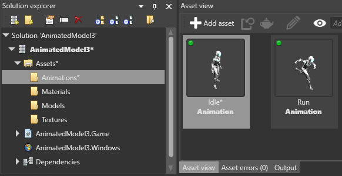

Animation properties
Warning
Приносим свои извинения за неудобства. Для этой страницы нет перевода на русский язык. Она будет отображаться на английском языке.
Beginner Designer
After you import an animation, you can select it in the Asset View (in the bottom pane by default) and view and edit its properties in the Property Grid (on the right by default).


Source
The source file used by the animation asset. If you change this, Game Studio re-imports the animation.
Clip duration
By default, clip duration is disabled. This means the animation starts at frame 0 and runs to the last written keyframe in the file.
However, single animation tracks sometimes include several animations. In this case, you have to split the track. To do this, enable Clip duration and adjust the start and end frames to match the duration of each animation.
The start and end frames are still limited by the keyframes exported in the file. For example, if you originally exported frames 20 to 40 from the animation tool, the start frame cannot be lower than 20 and the end frame cannot be higher than 40.
By default, Game Studio assumes the frame rate is 30. You can change this in the Game settings asset properties under Editor settings > Animation frame rate.
Pivot position
Game Studio assumes the pivot is the origin of the coordinate system local to the animation. It should be set to (0, 0, 0). If your animation was shifted from the origin when exported, you can use this property to re-adjust it.
Scale import
The scale import should be set to 1. Stride detects the units in which your data was exported and adjusts it automatically. If there are no export settings in your animation file and the scale appears incorrect, you can use the scale import property to re-adjust it.
Repeat mode
You can choose PlayOnce, LoopInfinite or PlayOnce&Hold. This is just a hint for the engine. When you assign an animation asset to the model, you can specify differently. If you don't specify the mode later, Stride uses the attribute you set here by default.
Type
Stride supports two types of animation clip. Regular animations default to Animation clip and are used with linear blending if mixed. For Difference clip, there are few more settings. For more information, see Additive animation.
Skeleton
If you want to animate bones/joints, the animation needs a skeleton.
Skeletons are made of bones that form a hierarchy. When parent bones change their position, they also affect the positions of child bones. For example, a hand bone might have five child bones (the fingers and thumb); when the hand moves up and down, the fingers and thumb move with it.
Make sure you reference the same skeleton used by the model you want to animate. If there are missing bones or other differences between the bone/joint hierarchy of the skeleton in your animation file and the target skeleton, Stride retargets the animation as closely as possible.
Note
There's currently no way to visualize skeletons in Game Studio.
Root motion
When root motion is enabled, Stride applies the root node animation to the TransformComponent of the entity you add the animation to, instead of applying it to the skeleton.
This is useful, for example, to animate entities that don't require skeletons, such as a spot light moving back and forth.
Note
If the animation has no skeleton specified in Skeleton, Stride always applies the animation to TransformComponent, even if root motion is disabled.
Note
The TransformComponent applies an offset to the model node position. If you don't want to add an offset, make sure the TransformComponent is set to 0,0,0.
Import custom attributes
If you have custom attribute in the animation file...